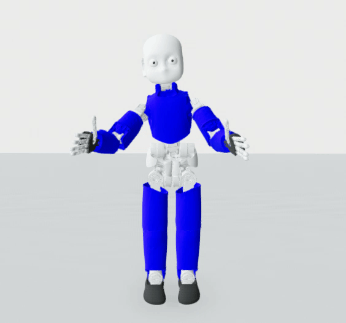

Plynulé pohyby (Smooth movements)
Úkolem je provádět plynulé pohyby rukou robota. Robot má být schopen pohybovat se po přímce nebo po kružnici s plynulou trajektorií — pohyb tedy musí být spojitý a bez trhání.

Úkol
Implementujte funkci move() v souboru exercise_2.py, která bude pohybovat rukou robota po přímce nebo kružnici.
Funkce přijímá čtyři argumenty:
client– instance třídypyCubovládající simulaciaction– řetězec"line"(přímka) nebo"circle"(kružnice)axis– seznam celých čísel. Pro"circle"má vždy délku 1. Pro"line"může mít délku 1–3. Čísla udávají osy, podél kterých se má robot pohybovat (např.[0, 1]znamená pohyb v osách x a y).r– seznam desetinných čísel (stejné délky jakoaxis), v metrech. Pro"circle"jde o poloměr kružnice, pro"line"o délku úsečky v dané ose.
Ukázkové vstupy:
action="circle", axis=[0], r=[0.01]– koncový efektor opíše kružnici kolem osy x s poloměrem 0,01 maction="line", axis=[1], r=[-0.05]– koncový efektor se posune po přímce v ose y o −0,05 maction="line", axis=[0, 1], r=[0.05, -0.05]– koncový efektor se posune současně v ose x o 0,05 m a v ose y o −0,05 m (výsledkem je jedna šikmá přímka)
Funkce musí vrátit dvě hodnoty: počáteční a koncovou pózu trajektorie
obě získejte pomocí
client.end_effector.get_position()
Bodování
Získáte 10 náhodných testovacích případů (po 1 bodu).
Kruhové i přímkové pohyby se vyhodnocují podle tří dílčích kritérií:
kružnice:
směrodatná odchylka vzdálenosti bodů kružnice od středu musí být
< r * 0.125rozdíl očekávaného a skutečného poloměru musí být
< r * 0.1průměrná vzdálenost bodů od očekávané roviny musí být
< 0.1
přímka:
rozdíl skutečné a očekávané délky musí být
< 0.0075úhel mezi očekávanou a skutečnou přímkou musí být
< 0.1průměrná vzdálenost všech bodů od očekávané přímky musí být
< 0.01
Plynulost pohybu není automatickým testerem kontrolována!
Kód by měl být co nejobecnější, aby fungoval pro jakýkoli povolený vstup (nepište např. dlouhé
if/elsevětvení pro každou kombinaci os).
Požadavky
Pro správnou funkci testeru exercise_2_tester.py:
nevytvářejte nového klienta, použijte předaný argument
clientnepřejmenovávejte funkci ani soubor
vraťte dvě hodnoty: počáteční a koncovou pózu trajektorie typu
utils.Pose
Pro správné splnění úlohy:
Nevypínejte gravitaci
Udělejte pohyb co nejplynulejší